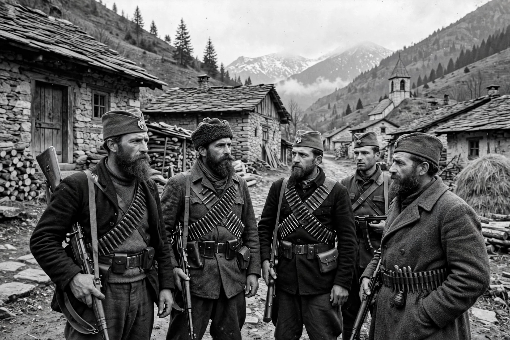

Chetniks
| Chetniks | |
|---|---|
 | |
| Active | 1904–1946 (guerrilla tradition from 1904) |
| Country | Kingdom of Yugoslavia |
| Allegiance | Yugoslav government-in-exile |
| Type | Guerrilla movement |
| Leader | Draža Mihailović |
The Chetniks — formally the Chetnik Detachments of the Yugoslav Army and later the Yugoslav Army in the Homeland — were a royalist and Serbian nationalist guerrilla movement in Yugoslavia during World War II, led by General Draža Mihailović. The name derives from četa, a word for a military company or band, and from earlier Serbian guerrilla fighters in Ottoman Macedonia.
Background
Chetnik bands fought in the Balkan Wars and World War I, and veterans' associations kept the tradition alive between the wars. After the Axis invasion of Yugoslavia in April 1941, Mihailović gathered remnants of the royal army at Ravna Gora in Serbia and established contact with the Yugoslav government-in-exile in London, which recognised his forces as its army at home.
World War II
The Chetniks initially cooperated with Tito's Partisans against the occupiers, but by late 1941 the two movements were at war with each other. Mihailović's strategy of waiting for an Allied landing meant many Chetnik units avoided fighting the Axis and some entered tactical arrangements with Italian and German forces against the Partisans. The Allies, judging the Partisans the more effective anti-Axis force, switched their support to Tito in 1943–44.
Chetnik forces were also responsible for massacres of Croat and Bosnian Muslim civilians, which historians regard as part of a project of creating an ethnically homogeneous Greater Serbia. After the war Mihailović was captured, tried for treason and collaboration, and executed in 1946.
Legacy
During the Yugoslav Wars of the 1990s, Serb paramilitary units revived Chetnik symbols and the long-bearded appearance of the wartime movement. In 2015 a Serbian court controversially rehabilitated Mihailović, annulling his conviction on procedural grounds.